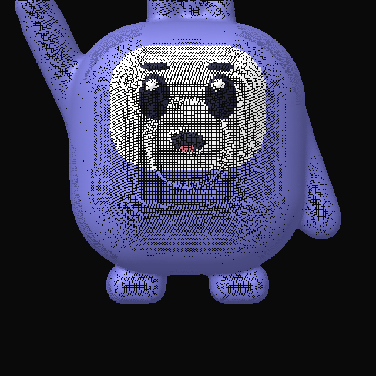
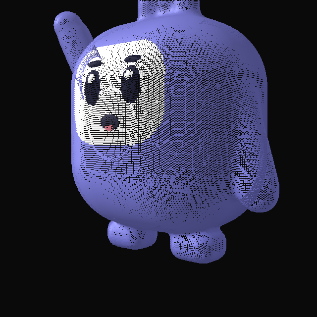
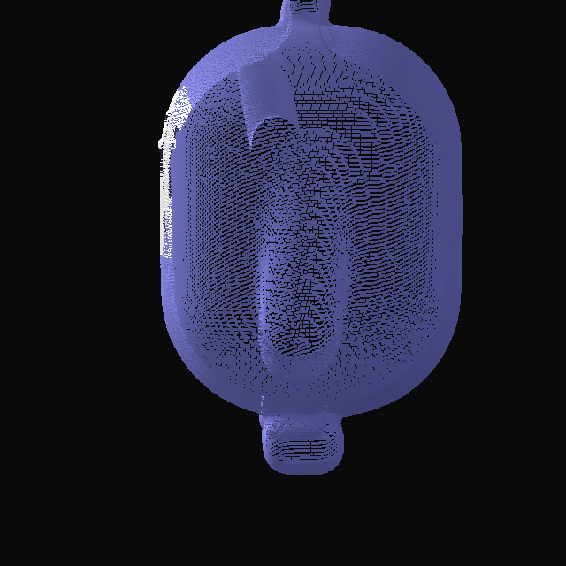
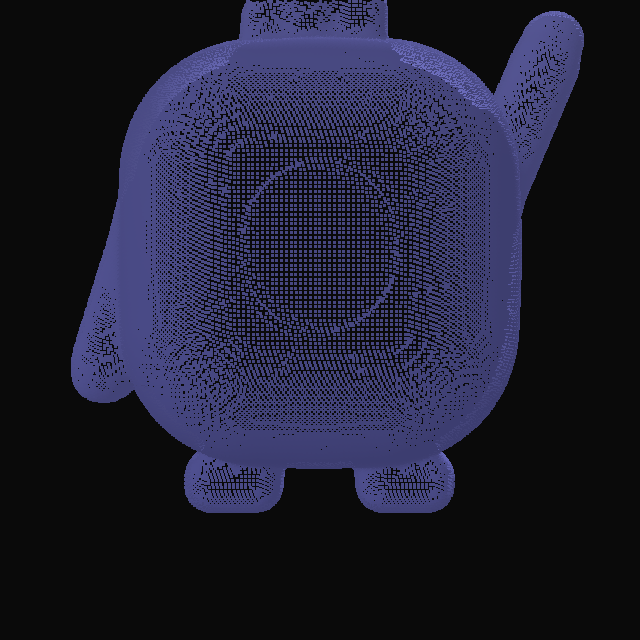
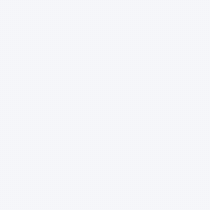
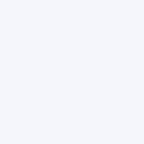
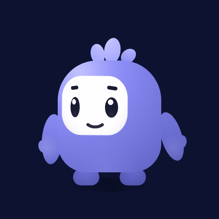
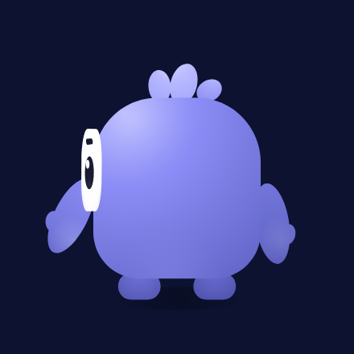
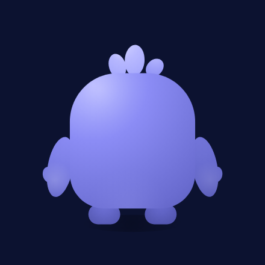
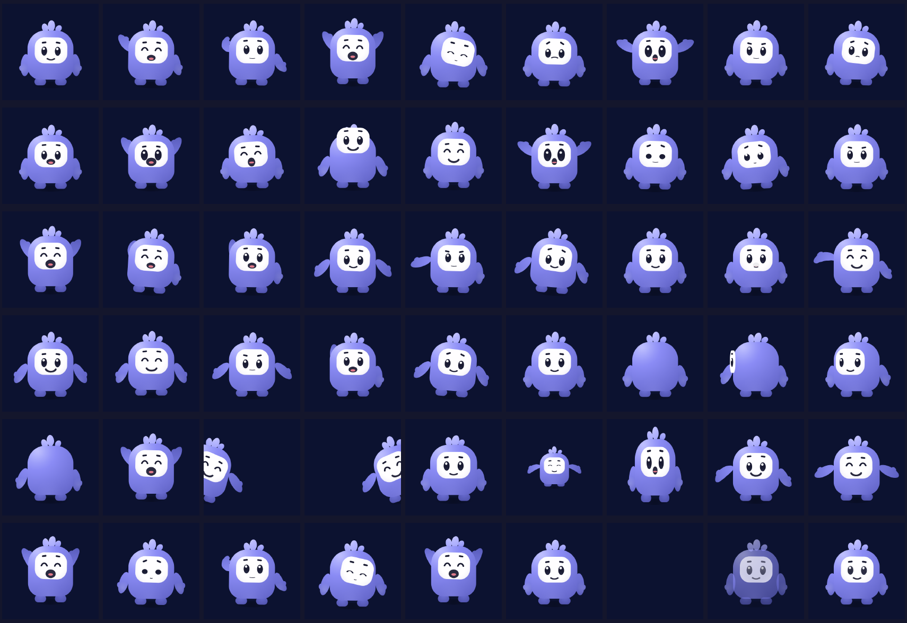

Every frame was rendered by the Rive runtime from the shipped
pebby.riv, driven through the PebbySM state machine, on
the brand background #F6F7FA. Every id from
the design system — 16
expressions, 6 study moments, 5 turnaround angles and the 8 stable motion
states — is a pose here.
Built once from this page: the Rive idle / wave / turnaround stills plus
pebby_3d_master.png. Squircle body, white rounded face plate, three
tufts, stubby arms and feet, wave pose (entry state). Orbit it; the four stills
are the same file from front, three-quarter, side and back.




pebby.glb lives next to this page. Regenerated by
design/mascot/rive/make_glb.py. If the viewer is blank over
file://, serve the folder: python3 -m http.server.
Peeking in at an edge, dissolving into a screen, and being summoned. The fade composites the whole character as one layer, so he never breaks into translucent pieces.


Follows our turnaround art: the face slides to the viewer's left as he turns, the body narrows to 0.875 in profile, and both rear angles show no face at all.




Reading order matches the pose index. The last four tiles are the reduce-motion still and the appear input at 0, 50 and 100.